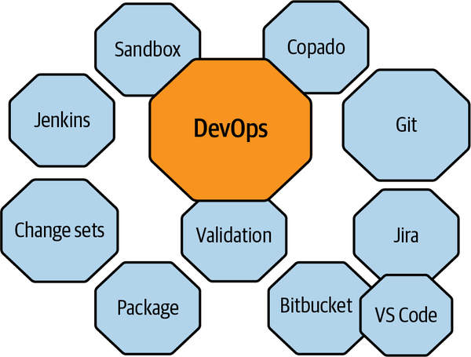
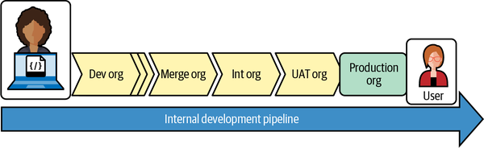
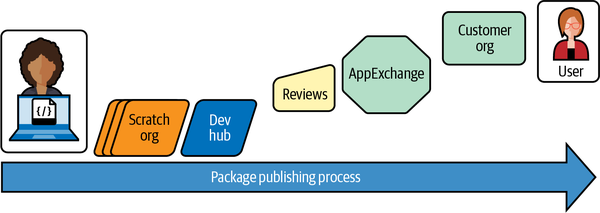

On top of the components inside of the Salesforce ecosystem, there are a lot of additional tools that are commonly used by Salesforce practitioners. Figure 10-1 lists a few of the terms and systems that you may need to become familiar with to build a modern Salesforce DevOps practice. There are some offshoots of several of the open source tools with different names. They will vary a bit from platform to platform, and the idiosyncrasies with Salesforce’s particular code management technologies require some understanding.

If you are already familiar with some of these tools and/or a certain way of doing things, you need to understand each of them can be used in a variety of different ways. If you move to a different organization, you may need to learn to use tools you have experience with in a different way than you are used to. Knowing how to describe the capabilities of the tools and systems you are familiar with and compare them to those used in your new environment will help you get up to speed faster. I have yet to work with two companies that execute DevOps in the exact same way. The most similarities are often observed between companies that have only recently started using Salesforce.
The most basic pattern in DevOps is developer to consumer (user). Starting from that perspective, we will look into the different pathways and tools involved in moving Salesforce code and changes from the developer to the consumer. It’s important to note that some of the pathways are slightly different depending on whether you are doing development on a company organization or building packages for distribution. We will start with the concepts involved with direct development and then go over the differences. This won’t be a deep dive into DevOps processes—I’ll only go deep enough to introduce the concepts, systems, and components that you will likely encounter.
Note that it’s rare for a Salesforce implementation not to include at least three additional “companion” implementations to enable working with mature management tools. Expect to consider (hosted) Jira, GitHub/Bitbucket, and Jenkins. (While not directly related to DevOps, federated and two-factor/multifactor identity providers should also be on that list [e.g., Ping, Okta, and Azure AD].)
DevOps is a more modern term for the evolved body of processes, which I learned to call configuration management. I tend to use the names interchangeably.
When you start working with Salesforce, you are given a production instance. This is your production org. As mentioned in Chapter 1, you can spin up copies of your production org, called sandboxes, to try out different changes, write code or automation, test integrations, and get an understanding of the user experience. A sandbox is a copy of your production org, but sandboxes are also independent orgs of their own (and may be referred to as “orgs” rather than “sandboxes”). Sandboxes can be cloned from other sandboxes, but Salesforce orgs do not track their own lineage. Once created, they are all just sandbox orgs connected to your production org.
You can set up different tiers of sandbox orgs, depending on your needs and licensing, with different capabilities. (The biggest difference in org types is how much data they can hold.) You can then logically arrange these orgs into pipelines. (A pipeline is a logical progression pathway through a development cycle: dev→test→production.) Each sandbox gets its own URL, and different parts of the parent production org—or the entire org—are copied into it. There are some default user access changes that happen between copies to manage security, but we won’t go into detail on that here; just be aware that the org creation/copying process can be adjusted and scripted.
Mapping, charting, and managing the logical pipelines, access to, and functions for each sandbox requires discipline and oversight in order to keep complicated or sensitive systems compliant. Figure 10-2 shows a representation of a rudimentary pipeline that might be set up for corporate development. Sandboxes are generally persistent but are refreshed on a regular basis. Changes are promoted up and down to keep the sandboxes in sync with approved updates. This process lends itself better to full regression testing but requires more care and feeding to maintain the state of each tier.

Figure 10-3 is a contrasting layout of a package development pipeline flow. Scratch orgs are temporary, time-limited development orgs. They are used more often in package development than persistent developer sandboxes (dev orgs). Scratch orgs are rapidly spun up and then destroyed based on a template definition for very explicit scenario testing.

Metadata is another term that is a little misused in the Salesforce vocabulary. Though in other contexts it’s generally taken to mean “data about data,” the simplest descriptive definition in the context of Salesforce is “anything that is not record data.” All of your code, configuration, setup, automations, labels, layouts, and pages are considered metadata. If you are editing code, you are editing metadata. If you create a new field on an object, that configuration is stored as metadata. If you store something in that field, however, that is not metadata; it’s just data.
Configuration details about any changes to a Salesforce org are stored as XML. This XML metadata can be versioned and transferred between different development, test, and production orgs. “Metadata” is used mostly as an umbrella term to cover any of the configuration changes you make (code or clicks). There are very few pieces of a Salesforce configuration that are not stored in metadata and movable from instance to instance in different “bundle” concepts. Most of Salesforce’s metadata is exposed in the web interface, but some can only be accessed by special tools.
Salesforce’s built-in change management system is called Changesets (sometimes written Change Sets). As the name suggests, a change set is a named group of elements in your org that you have changed that you want to push to another sandbox or your production org. Change sets are a very capable configuration management tool for small teams. However, they break down when you have multiple teams or disparate teams that aren’t in constant contact.
In each of your sandbox orgs, you can specify a “connection” to other orgs as a promotion pathway. The source org and the target org must both be configured to send and receive change sets independently. Once they’re connected, it’s a fairly easy process to select elements that you want to promote to another sandbox.
When a change set is created, it creates a copy of each element that’s added to it, at the point at which it’s added. All changes to that element that have been made by anyone, not just the current user, are included. If you make further changes to an element, you need to replace the version stored in the change set prior to uploading it, or create a new change set if you have already uploaded the previous change set.
Some configuration changes cannot be included in change sets, as they cannot be expressed in metadata/XML (yet). There are a small number of important changes that will have to be executed by an administrator directly on the org you wish to change. There are also some changes that cannot be cleanly undone. It’s very important to be familiar with these elements during your change process.
Salesforce has recently added new core functionality to the platform called DevOps Center that is intended to mature the operational capability of change management without requiring the use of external tools. This new product aims to add process management to the change set functionality. DevOps Center is entirely native to the Salesforce platform and free. There may be add-on paid features that roll out later, but the majority of the functionality should continue to be included as part of the base platform. Like Changesets, it is completely web interface-driven; no code, no scripts.
When new metadata is promoted to a Salesforce org, the system runs validation checks to make sure that the changes don’t reference anything that isn’t available on or compatible with the target org. It also checks that the updates don’t violate the standards for test code coverage. After validation has passed, you can choose whether or not to deploy. This step is part of every type of code promotion. The more complex your deployment pipeline is, the more complicated validation can be.
The validation process described here is not to be confused with Validation Rules. Validation Rules are a data management function that controls what rules an entry has to follow to be allowed as input in a field. Sample Validation Rules include formats for email addresses and phone numbers, though Validation Rules allow for much more complex restrictions on data entry than those examples suggest.
We talked about test coverage in Chapter 8, but it’s important to revisit it here. While technically a part of development and programming, writing unit tests is enforced in the validation and DevOps processes. Falling below the minimum threshold of 75% code coverage with unit tests can block code from being promoted or updated. The result of this can be a complete shutdown of your development pipeline, including halting many types of emergency fixes. The scoring system that calculates your current code coverage can also be accidentally cleared, and starting from zero can bring its own complications. Discipline is needed to manage this process if you are in an active environment.
As mentioned in Chapter 8, Salesforce’s recommended IDE for working with code is VS Code. VS Code is a lighter-weight version of Microsoft’s Visual Studio IDE that is centered around development on the .NET platform; it’s platform-agnostic and supports almost every major programming language. Eclipse is another IDE that is popular among developers, primarily in Java-based languages. Eclipse is still used for MuleSoft development, but that is also migrating to VS Code. (MuleSoft is a Salesforce-acquired platform that enables custom integration and API orchestration.) PyCharm is a popular IDE used for Python development, and Intellij is another popular IDE that still has many users in the Salesforce ecosystem. Illuminated Cloud also has a faithful following among Salesforce developers as a very feature-rich IDE with a lot of Salesforce-specific functionality.
Apex, Aura, and VF can be edited with VS Code or the Developer Console, the browser-based IDE included in the core platform. The Developer Console is very lightweight and usable on any device that can browse the web. However, it does not support all of the plug-ins and DevOps automation that are available with VS Code and other more fully featured desktop IDEs. Working with LWC also requires an external editor; it’s not currently possible to view and edit LWC code in the Developer Console.
There are many types of source code management tools that can be used with Salesforce. Most of the usual suspects that are popular in other ecosystems are compatible with Salesforce, to varying degrees. Git is the most common source code repository that I have seen in my engagements. Cloud-hosted versions of Git, like GitHub and Bitbucket, are commonly paired with Salesforce implementations to avoid working through firewalls and security to integrate with locally installed versions of source control and code management tools.
Salesforce upgrades its platform regularly to support the most modern security and integration standards. Other cloud services also keep that same pace with updates. Most of the time this means that cloud-to-cloud integrations between modern top-tier platforms are quick and well supported. On-premises systems may not have been kept up to the latest standards, which can lead to challenges when integrating more modern platforms with older ones. Source systems are subject to this same lag friction.
Jira and Azure DevOps, from Atlassian and Microsoft, respectively, are the project management tools that are most commonly used by Salesforce development teams. They are both full-featured work management suites. This is where you hear about epics, features, stories, and tasks as the organizational units of development. Source code control information can be referenced passively in text or actively linked into these tools with integrations. For example, Copado can watch for a change in Jira and initiate a merge process in Git. Build and deployment processes can also be initiated by features or plug-ins with these tools.
Orchestration, automation, and continuous integration and continuous delivery/continuous deployment (CI/CD) tools function to move bundles of changes or code from one environment to another. These tools can include testing, validation, and vulnerability scanning, among other functions. There are many standalone options as well as service- and subscription-based tools that cover a wide range of DevOps functionality. Among these, there are a few automation tools that I see repeatedly used for pipeline management orchestration (probably due more to cost than functionality). Jenkins is the most common automation tool that I see implemented. It’s an open source offering, which allows for it to be implemented relatively cheaply. Jenkins is also frequently at the core, or at least a component, of other orchestration toolsets and premium offerings.
Providers like Copado, Flosum, AutoRABIT, and Gearset have also incorporated various automation and CI/CD functions into hosted service offerings. These providers blur the distinctions between all of the individual toolsets and their components, providing an end-to-end service. The cloud-hosted service integrations work best with other best-of-breed cloud-hosted systems, for the same reasons discussed previously with regard to integrating systems with different levels of maturity.
Vulnerability checking and code compliance tools are relative newcomers, but they frequently appear in the Salesforce implementation and maintenance operations. PMD, CodeScan, AppOmni, and DigitSec have offerings that review source code and changes for vulnerabilities. These tools have different strengths and features, and can work at different points in the DevOps pipeline. Some of them have plug-ins that can work directly in the IDE and coach developers away from making mistakes that would be caught in later steps in the DevOps process.
When working with large-scale implementations, you should pay special attention to the several varieties of vulnerabilities that can work their way into your products. The most common pattern is using a tool like PMD to review coding best practices and identify antipatterns that allow for SQL injection and other self-inflicted problems.
It’s also important to monitor for shared libraries that get incorporated into your solutions through open source or proprietary components. Those components may be based on libraries that have known or discovered vulnerabilities of their own. These can be harder to track and secure than simple coding patterns.
One of the accepted best practices in Salesforce is “use the most appropriate tool for each task.” This philosophy keeps you and your users on the best possible path for taking advantage of upgrades and improvements made within the platform. The wide variety of component types can make regimented deployment of functionality complicated. It’s very important to have a clear idea of the types of deployments that are easy and those that can require significantly more work. I’ll coin and use the word darkitecture to describe system or logical components designed solely to enable a certain type of phased deployment. Some of the common design patterns that require building a supporting darkitecture are A/B testing, feature toggling, dark releases, and limited roll-outs.
DevOps in Salesforce is about managing units of change across the many different components within the platform. Most of the changes you can make are manageable as pieces of metadata and can be moved from instance to instance (org to org). Once a component is initialized on the platform, it is part of the platform. Even if end users don’t have permission to see it, the component exists and can be built upon by others with admin rights. Adding new features or enabling new functionality is easy. Removing things or turning things “off” brings complications because you are pushing changes to a single instance. This instance is running all of your code and configurations together, and there is no real mechanism to maintain isolation of configuration changes. There are mechanisms to hide or show most of the components you use for functionality, but they’re not the same for all components. Each component type can require a different structure to prevent it from being used or seen.
For example, a Lightning app is a logical container for users that is composed of different views of different objects. Those objects might be used by many other Lightning apps. If updates to your Lightning app include changes to the underlying objects, all those other apps might be impacted. To continue this example, if you wanted to change the way some field behaves but not change it for all the places that use the field currently, you could create a new field. Your plan might be to eventually remove the older fields or make your changes to the “in use” fields. These extra fields that may or may not be redundant and are only there to facilitate a transition are an example of darkitecture. It is not ideal to have this sort of redundancy, but it is created to keep the old functions from being affected by the new functions.
Darkitecture might take the form of a temporary permission set used to let only certain users see a feature (keeping the feature dark to the others). It could also take the form of logical branches in Apex code that refer to code running only when certain conditions are met. For example, you might create a “Custom Setting” or “Custom Label” flag called NEW_FEATURE_ENABLED. This flag would be set to false until you were ready to have your new feature take effect. Once you were ready for it to be true all the time—when you were no longer A/B testing or previewing the feature—you would no longer need this flag. But if you went on to build other components that relied on this new feature and needed to be tested, what would happen if it were set to false again? Taking the feature offline would also impact other features that had not been built to tolerate that feature going offline.
Darkitecture injects hard-to-discover dependencies and points of failure into your functionality. It’s also a form of technical debt that should be cleaned up when it no longer serves a purpose. Here, I gave individual examples of keeping a single atomic component dark. Modern features are made up of many components. Keeping track of all the temporary constructs that you would need to create to toggle (or A/B test) a complex feature set is laborious. Failing to appropriately manage all of the potential crossovers of one toggled component with other toggled components could be disastrous.
If this is something you are going to attempt, design your DevOps pipeline and sandbox structure accordingly. In most cases, it’s best to deal with darkitecture structures in your development process rather than in your production code/configuration. It’s cleaner to create multiple test environments to conditionally combine and test your new functions than to build in a bunch of interdependent conditional logic in your production code. If your organization is at the maturity level to desire this level of development complexity, it probably already has enough complexity to track and manage in its traditional functions. Extra complexity exacts a heavy toll when onboarding new builders/developers and adds points of failure. Ultimately, this slows future development and can create a fragile environment.
Properly planned, darkitecture can be done with technical debt and risk minimized. The logical scaffolding to support a complex deployment practice can be created and documented for easy application, though this will mean foregoing some of the intuitive best practices for simpler organizations. Polymorphism may have to give way to discrete and moderate redundant structures. Good naming schemes and separation of intents will be critical. Data storage and code size will also be impacted. Some of these changes may have performance or licensing implications to consider as well.
One of the few good reasons to adopt a multi-org structure (where your company uses multiple production instances of Salesforce) is to provide isolation between different types of development methodologies. A high-stakes customer org with customer-facing or revenue-generating functions should not be the same org that employees are encouraged to be creative within (a citizen development org). Rapid development and loose standards are ideal in some cases, but not in others. This should be evaluated before launching a Salesforce implementation. Good architects will raise a flag any time the fundamental usage model of Salesforce (including these backend considerations) changes. Make your designs as simple as they should be, but no simpler.
The variety of automation and code promotion systems available to Salesforce developers has increased in recent years. The internal offerings, with DevOps Center on top of Changesets, are strong enough for most medium to large teams. Larger teams will probably benefit from third-party tools, but they’re not required. The integration plug-ins that work with VS Code are also improving to enable easy code promotion and automation functions, and VS Code supports code coaching functions to help teams align on standards and best practices.
If you are bringing in consulting firms or other experienced practitioners, you will likely get pushed to invest in many of the toolsets described in this chapter. The compliance requirements, size, and sensitivity of your company/industry will dictate whether these tools are necessary for your development pipeline.
Salesforce’s DevOps ecosystem is not as easily automated as some other systems and platforms. There are still a handful of manual steps required, and some quirks to learn about. Furthermore, DevOps is a hefty skill to have to add to a developer’s toolset. Each new set of DevOps tools and practices requires at least some learning and onboarding. It may also require a specialized team of experts. Make sure you have the long-term appetite for the investment as you size your pipelines and teams. The extra training required on the processes to build your features is not insignificant. If you already have a healthy DevOps pipeline, you may end up duplicating some key resources to work with Salesforce. Do a full proof of concept of a pipeline before building your estimates. SSO and integration “gotchas” can pop up where you least expect them. This is especially true in hybrid or on-premises infrastructures. Cloud-hosted platforms tend to favor integrating with other cloud-hosted platforms.
The other drawback of the large numbers of ways that exist to create solutions is just that: there are often a lot of ways to do the same thing. Each person may see a solution as a different set of parts. This can lead to a bit of a melange of approaches, and the worst part is trying to reverse engineer how something works after the builder is gone. Large implementations need to dedicate time and resources to mapping how functionality is built. Systems that function extremely well can be labyrinthine landfills without a clear map from a well-executed plan. Currently, no Salesforce DevOps tools provide this framework or enable this discipline. Compliance and architecture have to have a hand in the checks and balances as well.
At the time of writing, DevOps maturity is an exciting domain to watch in Salesforce. The in-platform DevOps Center and Salesforce-specific tools like Copado, AutoRABIT, and Elements.cloud show signs of catapulting Salesforce past its competition. Self-documenting frameworks and story-to-element mapping could greatly reduce the technical debt common to rapid delivery systems such as Salesforce. Organizations that need DevOps tools beyond those included with the platform should invest in multiple suites to track functionality, security, and other facets of architecture. Acquisitions and integrations make this even more vitally important.
Salesforce has made most of the development functionality of the platform available to third parties. This means that a lot of the rapid innovation will come from outside the native Salesforce ecosystem. Watch closely for continued developments in this space so that you can take advantage of these new tools. Keep your eyes on the AppExchange and third-party offerings, free and paid. Scale your investment in architects and architects’ tools as you add development resources. Investing in the right tools at the right time (data factories, web service mock frameworks, data migration and scrubbing tools) can help keep your costs down and your time to market fast. Don’t just scale your process; make sure you evolve it.
The other side of the coin with the wide usage of these tools is that they are almost a requirement for experienced developers. Not having a Git repo or other similar tools can disorient developers who are accustomed to these modern trappings. If you have an organization large enough to warrant an enterprise architecture practice, you will probably need to be well versed in DevOps. Salesforce DevOps may require an investment in one or several additional tools of the types described in this chapter. With DevOps, as with security, you should always have a little more than you need, but not more. Don’t purchase tools or add processes that don’t justify their value; you should always be able to financially justify any process or purchase.